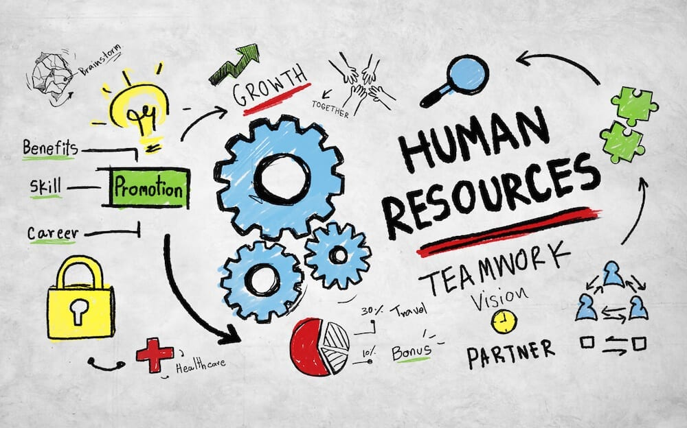

Project's
Taxi Data Analysis
Crop Production Analysis (1997-2015)

HR Analytics Dashboard
Book Recommendation System
Coffee Sales Dashboard
Logistics Dataset Analysis Using SQL
Anime Quote Recommendation Web App
Netflix Data Analysis Dashboard
×
Business Problem:
Project Description:
Project Link:
Menu
Homepage
Resume
Project's
Contact Info